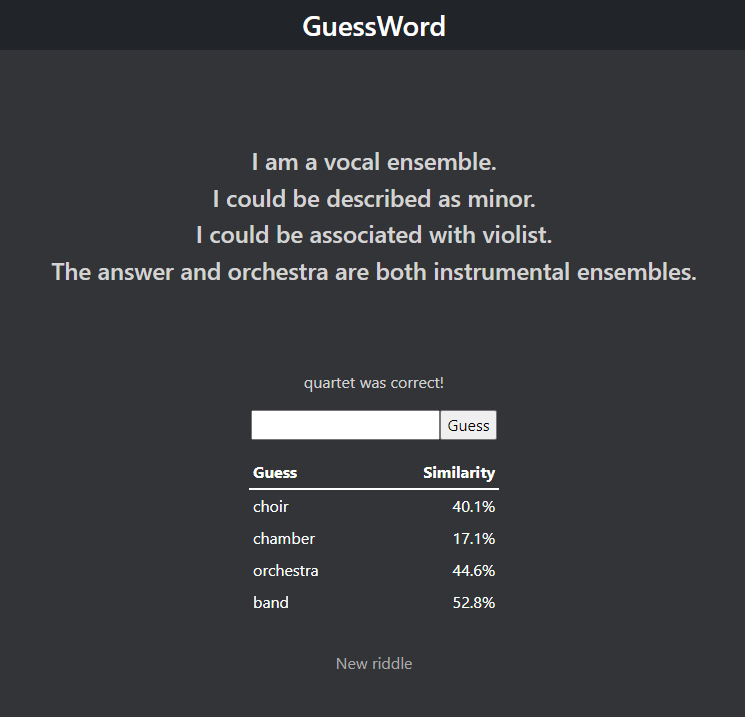

Play GuessWord (because of the service it's hosted on, the site may take a minute to load)
GuessWord is my take on the recent popular trend surrounding online words games. Unlike it's inspiration, Wordle, words are guessed based on definition not spelling. The game uses natural language processing techniques in order to give the user hints as to what word they are trying guess. Online APIs such as Datamuse and Thesaurus Rex are used to give adjectives or categories for the word, while a neural network model, trained using Word2Vec, is used to give users an idea of how close in defintion their guesses have been so far.
The application was built for the web using Python, HTML, CSS and Bootstrap. It features an SQL database to hold both user information, so players can track their game statistics, and the over 3 million trained word embeddings required to compare defintions.
The project went through many different stages of research and development. I needed to learn how to fully construct a web application, host it online and manage user data. GuessWord also took a huge amount of research into natural language processing to get both the clues and the word comparisons where I wanted them. I went through dozens of iterations, APIs, training model implementations and word lists to get the finished product. The project was a massive learning experiance for how to construct web applications and just how complex natural language processing can be.
